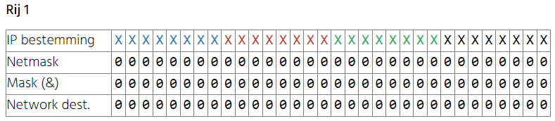

Default row
Als we de routetabel bekijken dan zien we dat de eerste rij heel speciaal is. Zowel network destination als netmask zijn 0.0.0.0.

Dit zorgt ervoor dat om het even welk pakket met om het even welk destination IP adres een exacte match zal geven waardoor die interface een kandidaat wordt om het pakket naartoe te forwarden. Dit wordt ook wel de default row genoemd. Op de default row zie je ook de gateway staan. Dit is natuurlijk de default gateway waarover we het al kort gehad hebben.
Als er geen enkele andere match is dan zal de default row altijd een match zijn en het pakket wordt dan gestuurd naar de default gateway.

De default gateway werd aangeleverd door de DHCP server of ze werd manueel ingesteld door de gebruiker. Bij je thuis is de default gateway waarschijnlijk gewoon het IP adres van je router.